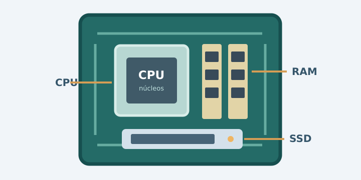

Hardware / AulaByte
El interior de un ordenador.
Descubre qué hace cada componente y cómo se relaciona con los demás.
Guía de hardware
Una visión general
Los componentes físicos de un ordenador reciben el nombre de hardware. Cada pieza cumple una función distinta, pero todas deben trabajar de forma coordinada.

| Componente | Función | Dato importante |
|---|---|---|
| CPU | Ejecuta instrucciones y realiza cálculos. | Procesa las tareas. |
| RAM | Guarda temporalmente datos de programas en uso. | Se vacía al apagar el ordenador. |
| SSD | Almacena archivos y programas. | Conserva los datos sin electricidad. |
| Placa base | Conecta y comunica todos los componentes. | Debe ser compatible con las demás piezas. |
Procesador (CPU)
Interpreta y ejecuta instrucciones. Su rendimiento depende de la arquitectura, el número de núcleos, la frecuencia y otras características.
Ejemplo: participa en las operaciones necesarias para abrir una aplicación.

Memoria RAM
Guarda temporalmente los datos que necesitan los programas mientras funcionan. No sustituye al almacenamiento, porque es una memoria volátil.
Por ejemplo, abrir muchas pestañas del navegador aumenta la cantidad de memoria RAM necesaria.
Almacenamiento SSD
Un SSD conserva el sistema operativo, las aplicaciones y nuestros archivos aunque el ordenador esté apagado. No utiliza piezas mecánicas móviles para leer los datos.
Placa base
Es el circuito principal al que se conectan el procesador, la memoria RAM y muchas otras piezas. También proporciona las conexiones necesarias para que se comuniquen.